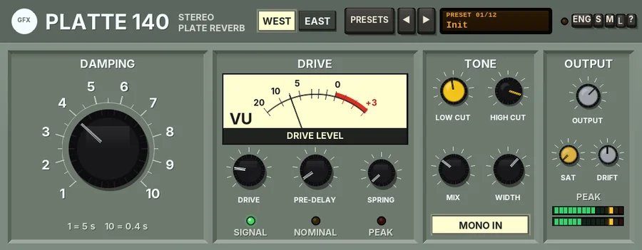

Platte 140
A stereo plate reverb with two plates in one case - a bright West plate and a dark East plate - a motorised-style damping dial, a driven send amp and a spring blend.

Overview
Platte 140 is a stereo plate reverb with two plates in one case, chosen with the WEST / EAST key in the header. Each comes with its own faceplate.
WEST is in the spirit of the classic late-50s West German studio plates: a big steel sheet in a wooden case, one driver, two pickups and a damping pad worked from a grey-green remote box. It is pristine, bright and dense with a smooth decay. EAST is in the spirit of the Eastern Bloc state-built broadcast plates: thick sheet steel in a welded frame, driven by a valve amp through an input transformer. It is darker, denser and more mid-focused, a little grittier and more metallic, with the faint 50 Hz hum and hiss of the valve amps. Its panel is the bone-grey enamel of the 45 family, with German labels.
As on a real plate there are no early reflections: the sound turns dense within a few milliseconds, and the high frequencies travel faster through the sheet than the lows, which gives the shimmer. The big DAMPING dial sets the decay, as the pad did, from 5 s down to 0.4 s. DRIVE pushes the send amp into saturation for density and colour, and SPRING blends in a pair of torsion springs.
Reach for it for
- Classic bright vocal plates
- Snare and drum plates, short or long
- Dark, dense broadcast-style ambience (EAST)
- Long, washy tails on pads and ballads
- A plate on an aux send (MIX 100%)
- Plate-and-spring hybrids with SPRING
Controls
Drag the knobs up and down (hold Shift for fine moves); double-click to reset one; the mouse wheel works too. A knob shows its value while you touch it. The two faceplates have the same controls in the same places; the EAST names are given in brackets.
The header
- WEST / EAST
- Chooses the plate and its faceplate (WEST by default). The change fades the reverb out, swaps the plate and fades it back in (30 ms each way), so there is no click. The EAST plate is about 22% longer inside, darker, more mid-focused and grittier when driven, and adds hum and hiss with DRIFT.
- PRESETS
- Opens the preset list (or click the display). The list ends with Reset all to defaults, which also resets OUTPUT, SAT and the output stage settings.
- ◄ / ►
- Step through the presets.
- Preset display
- Shows the preset number and name. Click it for the list.
- S / M / L
- Panel size: small, medium or large. The panel also scales to fit the plugin window.
- ?
- Opens a pop-up with the design credit, the GFX website address and the address of this manual. Click anywhere to close it.
The two faceplates
- WEST
- A grey-green studio remote-control box with recessed trays, engraved white print and a cream VU meter face. English labels.
- EAST
- A bone-grey baked-enamel laboratory panel with charcoal frames, a dB meter and an orange band on the damping dial. German labels, and decimal commas in the values (0,4 s).
DAMPING (DÄMPFUNG)
- Dial
- The decay time, numbered 1 - 10 like the remote: 1 = the pad lifted, 5 s; 10 = the pad pressed fully, 0.4 s; equal ratios in between (2.2 s by default, about 3.9). It clicks into the numbers as you drag; hold Shift to drag finely without the detents. The mouse wheel steps one number (with Shift, a tenth). Double-click for 2.2 s. While you touch it, the legend shows the time and the position (POS, or STUFE on EAST); otherwise it reads 1 = 5 s, 10 = 0.4 s. The decay glides, with no zipper noise.
- What it does to the sound
- Like the real pad, it mostly shortens the lows and mids; the sheet's own high-frequency loss stays. So a short setting sounds relatively bright, and a long one rolls the top off (on the 5 s setting the WEST plate rings about 2.7 s at 8 kHz, the EAST about 1.7 s).
DRIVE (ANTRIEB)
- Meter (DRIVE LEVEL / AUSSTEUERUNG)
- The send amp's level, on a VU scale (WEST) or dB scale (EAST). 0 is the amp's nominal level; the red (WEST) or orange (EAST) zone is where it starts to saturate.
- DRIVE (ANTRIEB)
- How hard the send amp is driven, 0 - 100% (20% by default): up to +24 dB into the amp and the same back out, so it adds saturation and density, not level. WEST has a clean, symmetric soft curve; on EAST the transformer saturates the lows first, then the valve stage adds even harmonics.
- PRE-DELAY (VERZÖG.)
- The gap before the reverb starts, 0 - 250 ms (10 ms by default). It glides when you move it.
- SPRING (FEDER)
- Blends in two torsion springs, 0 - 100% (0% by default), mixed in as the plate gives way. They follow DAMPING up to about 2.7 s, with the springs' typical drip.
- Lamps (WEST)
- SIGNAL (input present), NOMINAL (the amp near its nominal level) and PEAK (the amp overloaded).
- Lamps (EAST)
- POWER (always lit), ANTRIEB (glows with the drive level) and ÜBERSTEUERUNG (the amp overloaded).
TONE (FILTER)
- LOW CUT (TIEFEN)
- A 12 dB per octave low cut on the reverb return (yellow cap), 20 - 600 Hz (100 Hz by default). The plate itself barely moves below 60 Hz.
- HIGH CUT (HÖHEN)
- A 12 dB per octave high cut on the return (black cap), 2 - 20 kHz (16 kHz by default). Fully up reads OFF.
- MIX (MISCHUNG)
- The dry / reverb balance, 0 - 100% (30% by default, for an insert). The dry signal stays at full level up to 50% and the reverb is at full level from 50%. Set 100% when Platte 140 is on a send.
- WIDTH (BREITE)
- The stereo width of the reverb, 0 - 150% (100% by default). 0 is mono.
- MONO IN (MONO EIN)
- On by default: one driver fed with left and right together, as on the hardware. Off, left and right drive the sheet at two points, for a reverb that keeps a little of the source's stereo image.
OUTPUT (AUSGANG)
- OUTPUT (PEGEL)
- Output level, -24 to +12 dB.
- OFF / CLIP / LIMIT
- The final stage: nothing, a soft clipper just under 0 dB (the default; the CLIP key flashes red while it works), or a look-ahead limiter (3 ms latency, compensated by REAPER). The band frequencies, bias and ceiling are in the parameter list.
- SAT
- The GFX band saturation on the way out: only the lows and highs are saturated (the mids stay clean), with a soft curve that loosens as the level rises. 0% by default.
- DRIFT
- 0 - 100% (50% by default). See Drift below.
- PEAK (SPITZE)
- The output level, left and right.
Drift
DRIFT is the wander of the plate's tension. The decay time drifts slowly (by about 4.5% at 50%), and the plate's resonances each move a little on their own - you hear a living tail, never a pitch wobble. On EAST it also brings in the valve amp's 50 Hz mains hum with its rectifier buzz (about -86 dBFS at 50%, -80 dBFS at 100%, its level wandering) and a little hiss on the return. At 0% the plate is perfectly steady and silent.
Presets
Presets set the plate (WEST or EAST), DAMPING, PRE-DELAY, LOW CUT, HIGH CUT, DRIVE, MIX, WIDTH, DRIFT, MONO IN and SPRING. OUTPUT, SAT and the output stage are left as they are.
- Init
- WEST, 2.2 s, 10 ms pre-delay, 30% mix.
- Vocal Plate
- WEST, 2.6 s with 40 ms of pre-delay and a softer top (12 kHz), 25% mix.
- Snare Plate
- WEST, 1.4 s, more drive, the lows cut at 200 Hz.
- Short Plate
- WEST, 0.8 s with no pre-delay: a tight, bright ambience.
- Long Wash
- WEST, 5 s with 60 ms pre-delay, wide (120%), stereo in, a darker top.
- Drum Bus
- WEST, 1 s, lows cut at 250 Hz, half drive, 12% mix, stereo in.
- Plate Send
- WEST, 2.4 s at 100% mix, for an aux send.
- Ost Vocal
- EAST, 2.4 s with 30 ms pre-delay, the top at 9 kHz.
- Ost Snare
- EAST, 1.2 s, driven harder, the lows cut at 220 Hz.
- Iron Curtain
- EAST, 4.5 s, heavy drive, dark (7 kHz), with lots of drift and hum.
- Broadcast Hall
- EAST, 3.2 s with 45 ms pre-delay, wide, stereo in.
- Spring Hybrid
- EAST, 2 s with 55% SPRING blended in.
Tips
- On an insert, keep MIX between 15 and 35%; on a send, set MIX to 100% and use the send level instead.
- For vocals, 20 - 60 ms of PRE-DELAY keeps the words clear of the reverb.
- Raise LOW CUT to 150 - 300 Hz to keep the reverb out of the bass and kick.
- Turn DRIVE up for a denser, more forward plate; on EAST it also adds warm, valve-like grit.
- Set DRIFT to 0 on EAST if you do not want any hum or hiss.
File: gfx-platte-140.jsfx